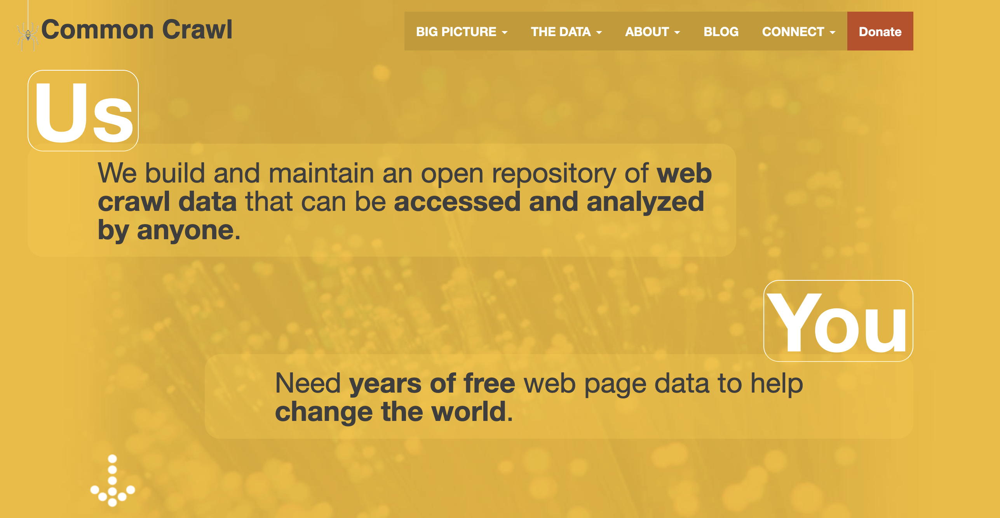

Stock Price Prediction Using Earnings Call Transcripts
I used advanced Python and Machine Learning techniques to create a new dataset and analyze text data.
The goal of this project was to web scrape earnings call transcripts from the Internet and then analyze them using Machine Learning.
We downloaded over 100 earnings call transcripts and used ML to generate the word cloud that summarizes all of them below:

We had to create lists of every stock in the S&P, keep track of its price at various intervals, and then see how the text data affected the price. I used Python to complete every aspect of the project.
A link to the Medium article we published below:
Predicting Stock Price Using Natural Language Processing on MediumQuerying a Petabyte-sized Dataset: Common Crawl
I utilized AWS, Python, and Pyspark to query and derive insghts from this massive dataset.
Crawl Homepage at https://commoncrawl.org/
Table of Select * Query in AWS that Retrieves Over a Billion Results

Video Where I Explain How We Queried the Common Crawl:
VIDEO: Common Crawl Data Access Using PySparkAnalyzing AirBnb Listing Using Analytics and Data Science
I used R to do data analysis and machine learning on AirBnb dataset.
Using Data Science to Analyze Airbnb Listings in R
Click to download the report
Neural Network to Predict Bike Sharing in Python
Predicting the Score of Super Bowl 54 Using Ensemble Modeling in Python
Web Analytics with Comscore Data: Clustering 90 Million Rows in R
Data Analysis Projects
Data Management, Graphics, and Statistics: Trending YouTube Videos in RYelp vs Google Reviews: Data Compared in Excel
Data Engineer Projects
Common Crawl: Internet Link MeasurementREST API Reference
Analytics Framework
Predicing Stock Price